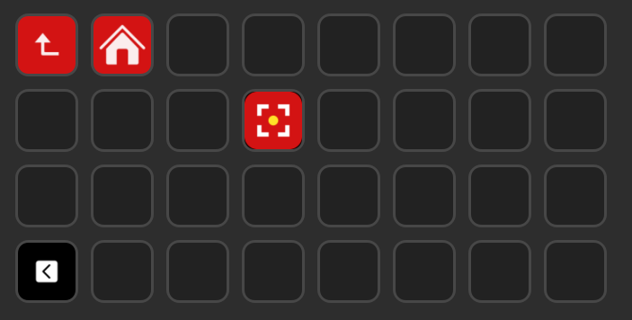

Danke, Knips gehört dir.
Vier Schritte, dann läuft es.
1Knips herunterladen
Wähle deinen Rechner und öffne danach die Datei.
Windows 10 und 11 · macOS ab 14 (Sonoma), Mac mit Apple-Chip (M1 oder neuer)
Holst du die Mac-Fassung? Dann gelten die Mac-Schritte: Öffne diese Seite am besten direkt am Mac, dann siehst du sie.
Gerade am Handy? Öffne deine Bestellmail von Digistore24 am Computer und klick dort auf den ersten Zugangs-Link. Dann bist du wieder hier.
2Windows warnt dich, das ist normal
Windows kennt neue Programme noch nicht und zeigt deshalb meist diese blaue Meldung. So geht es weiter:
Vereinfacht nachgezeichnet. Keine Meldung bei dir? Dann geht es direkt weiter.
2Knips zum ersten Mal öffnen
Knips hat noch kein Apple-Siegel. Darum warnt der Mac beim ersten Öffnen, so wie Windows auch. Das kommt nur einmal.
- Öffne den Ordner „Programme“ und klick doppelt auf Knips. Der Mac meldet „Knips nicht geöffnet“. Klick auf „Fertig“.
- Öffne Systemeinstellungen → Datenschutz & Sicherheit und scroll ganz nach unten. Bei Knips auf „Trotzdem öffnen“ klicken und mit deinem Mac-Passwort bestätigen.
- Der Mac fragt, ob Knips den Bildschirm aufnehmen darf. Klick auf „Einstellungen öffnen“, schalte Knips ein und starte Knips neu. Knips zeigt dir dafür selbst einen Knopf.
Bei älteren macOS-Versionen geht Schritt 1 und 2 auch kürzer: Rechtsklick auf Knips → „Öffnen“ → „Öffnen“.
3Knips freischalten
Knips fragt beim ersten Start nach diesen zwei Angaben. Einfach kopieren und einfügen.
Beides steht auch in deiner Bestellmail von Digistore24.
Dein erster Screenshot: Strg + Num 1, Bereich ziehen, mit Strg + V einfügen. Laptop ohne Ziffernblock? Rechtsklick auf das Knips-Symbol bei der Uhr → „Ausschnitt“.
4Knips griffbereit machen
Windows lässt Programme das nicht selbst machen, das sind zwei Klicks von dir:
Das war es! Ich wünsche dir viel Freude bei der Arbeit mit Knips.
Herzliche Grüße
Norbert Kloiber
Und falls du ein Stream Deck hast …
Das Wichtigste ist geschafft, Knips läuft. Das hier ist die Zugabe: Mit einem Stream Deck machst du Screenshots im wahrsten Sinn des Wortes mit einem Klick: Taste drücken, Bereich ziehen, und das Bild liegt schon im Zwischenspeicher. Dann nur noch mit Strg + V einfügen, wo du es brauchst. Du musst dir kein Kürzel merken und brauchst nicht einmal einen Ziffernblock.

Die Taste musst du dir nicht selbst basteln. Du bekommst sie fertig von uns, mit dem Knips-Bild und dem richtigen Tastenkürzel. So kommt sie auf dein Stream Deck:
- Die fertige Taste hier herunterladen.
- Das Stream-Deck-Programm öffnen.
- Die Datei auf eine freie Taste ziehen.
Das geht ab Stream Deck 6.8. Ältere Version? So legst du die Taste selbst an. Die Taste tut nichts? Hier ist die Hilfe.
Noch kein Stream Deck? Ich arbeite selbst mit dem Stream Deck XL und seinen 32 Tasten. Hier findest du es bei Amazon*
* Partnerlink zu Amazon (Werbung). Kaufst du darüber, erhalte ich eine kleine Provision, für dich ändert sich am Preis nichts.